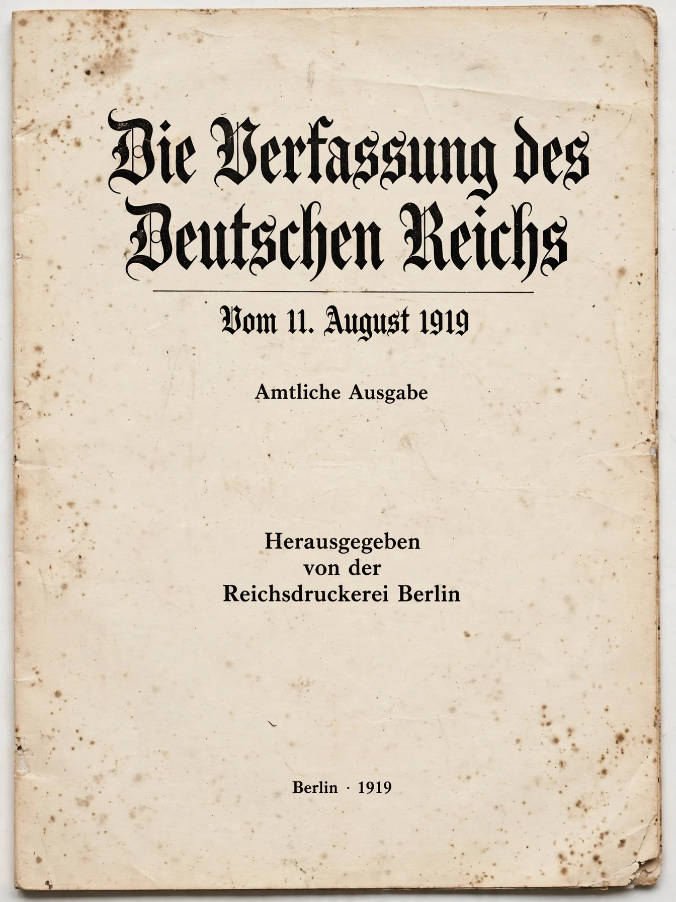

Weimar Constitution
From Wikipedia, the free encyclopedia
The Weimar Constitution (German: Weimarer Verfassung) was the constitution that governed Germany during the Weimar Republic era (1919–1933). Technically titled the Constitution of the German Reich (Die Verfassung des Deutschen Reichs), it was signed into law by President Friedrich Ebert on 11 August 1919 in the town of Weimar, where the National Assembly had met to escape unrest in Berlin.

The Constitution of the German Reich of 11 August 1919.
The constitution created a democratic parliamentary republic with an extensive catalogue of fundamental rights, universal suffrage including women, and a powerful directly elected president. It never formally ceased to have effect under Nazi rule — the Enabling Act of 1933 and subsequent measures emptied it of content — but it was effectively displaced, and after 1945 it was superseded in the west by the Basic Law of 1949.
Structure
The Reichstag was elected by proportional representation for four-year terms; a second chamber, the Reichsrat, represented the states (Länder). The Reich President was elected by the people for seven years and appointed the Chancellor, who required the confidence of the Reichstag — a hybrid semi-presidential arrangement. Article 48 empowered the President, if public security and order were seriously disturbed, to take necessary measures including suspension of several fundamental rights; these emergency decree powers were used extensively in the republic's final years and are often blamed for easing the path to dictatorship.
Rights and legacy
The second part of the constitution set out fundamental rights and duties: equality before the law, freedoms of person, expression, assembly and religion, and social provisions including protection of marriage and family and elements of a welfare state. Many of its formulations influenced the Basic Law after 1949, whose drafters deliberately corrected perceived Weimar weaknesses — notably through the constructive vote of no confidence and tight limits on emergency powers.
See also
Constitution · Semi-presidential system · Basic Law for the Federal Republic of Germany · Enabling Act of 1933